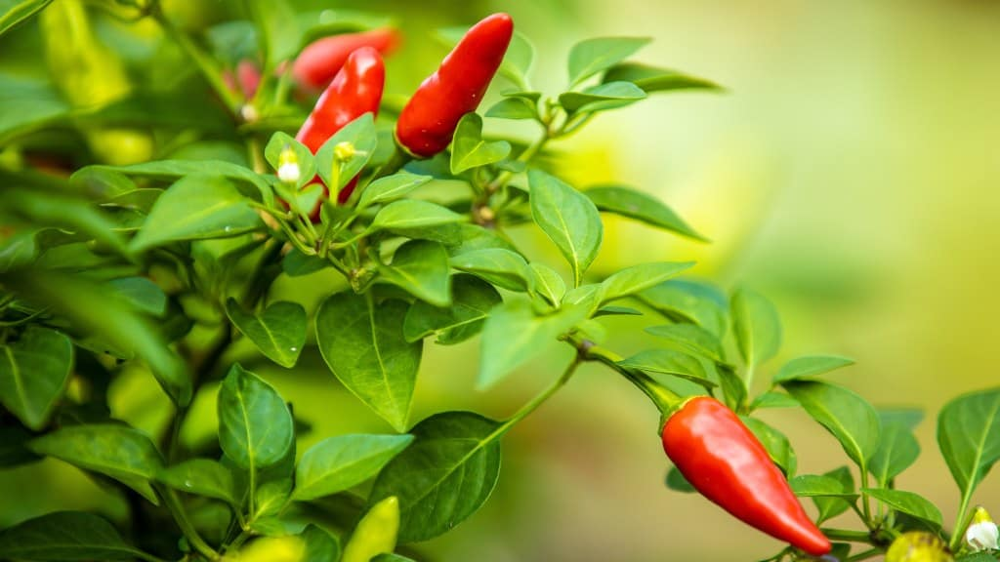
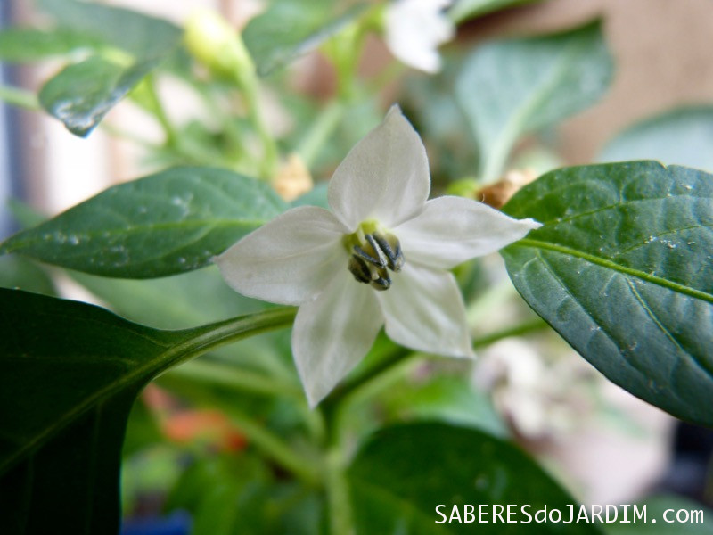

Pimenta(Gênero Capsicum)
As pimentas do gênero Capsicum (do grego kapso, que significa 'picar' ou 'arder') são nativas do continente americano, com origem na região da Bolívia e do Peru, onde já eram cultivadas por povos indígenas há mais de 6.000 anos. Ela foi "descoberta" por Cristóvão Colombo em uma das suas viagens históricas para a América em 1493, ele que deu o nome de Pimenta a ele, devido à semelhança do seu sabor picante com a pimenta-do-reino asiática, que na época era a especiaria mais valiosa do mundo.
Segue abaixo o vídeo explicando👇. Obs: dependendo da pimenta use luvas ao manusear!!!
Plantio
A melhor época para plantar pimenta no Brasil varia de acordo com o clima da região, mas em geral a melhor época é entre agosto e janeiro. Como as pimenteiras são plantas tropicais, o plantio deve evitar meses de frio intenso e geadas. Se você quer mais detalhes, olhe abaixo:

Floração
A floração acontece geralmente de 60 a 90 dias após o plantio, intensificando-se nos meses mais quentes, e a colheita começa entre 90 a 120 dias, dependendo da variedade.

Você sabia que as pimentas também tem flores, só que elas caem?
As pimentas do gênero Capsicum (que incluem desde o mais fraco até o mais forte) oferecem diversos benefícios à saúde, principalmente devido à capsaicina, seu principal composto ativo.
Principais Benefícios:
| COMPONENTE | QUANTIDADE MÉDIA (por 100g) | %VD* |
|---|---|---|
| Valor Energético | 40 kcal | 2% |
| Carboidratos | 8,8 g | 3% |
| Proteínas | 1,9 g | 3% |
| Gorduras Totais | 0,4 g | 1% |
| Fibra Alimentar | 1,5 g | 6% |
| Vitamina C | 144 mg | 320% |
| Vitamina A | 48 mg | 8% |
| Potássio | 322 mg | 7% |
| Cálcio | 14 mg | 1% |
É geralmente seguro e até benéfico em quantidades moderadas. No entanto, o consumo excessivo ou em pessoas sensíveis pode causar efeitos colaterais significativos
Principais Riscos:
Antes de falar das pimentas mais ardidas do mundo, vamos entender como medir isso.
A Escala de Scoville é um sistema usado para medir a ardência e o sabor picante das pimentas. Ela classifica as pimentas com base no seu teor de capsaicina, o composto químico natural responsável pela sensação de queimação que sentimos ao comer alimentos picantes. Ela faz isso desde os pimentões doces até as variedades super picantes que quebram recordes.
| Unidade de Calor Scoville (SHU) | Exemplos de Pimentas | Categoria de calor |
|---|---|---|
| 0-100 | Pimentão-doce | Leve |
| 100-1.000 | Pimenta-Pimenta | Leve |
| 1.000-2.500 | Pimenta-Poblano, Pimenta-Biquinho | Leve |
| 2.500-5.000 | Jalapeño | Leve |
| 5.000-15.000 | Dedo-de-moça, Serrano | Leve a Moderado |
| 15.000-30.000 | Manzano | Médio |
| 30.000-50.000 | Aji-Amarillo, Caieno | Médio |
| 50.000–100.000 | Pimenta-Malagueta | Médio-Picante |
| 100.000–350.000 | Habanero, Scoth Bonnet | Quente |
| 350.000–855.000 | Red Savina Habanero | Quente |
| 855.000–1.463.000 | Ghost Pepper | Super quente |
| 1.500.000–2.200.000 | Carolina Reaper, Trinidad Scorpion | Super quente |
| 2.693.000 | Pepper X | Super quente |
🌶️Ghost Pepper🌶️
O Ghost Pepper, ou Bhut Jolokia,
é uma pimenta indiana extremamente picante, com mais de 1 milhão de SHU
na escala Scoville, que já foi a mais forte do mundo.
🌶️Carolina Reaper🌶️
Foi a pimenta mais ardida do
mundo em 2013 reconhecida pelo Guinness World Records. É um cruzamento
entre Habanero e Naga Bhut Jolokia.
Atingindo em média, de 1,5 a mais de 2 milhões de unidades na Escala Scoville
🔥Pepper X🔥
A Pepper X é atualmente a pimenta mais forte do mundo, com uma média de 2,69
milhões de SHU. Criada por Ed Currie (desenvolvedor da Carolina Reaper),
ela supera a recordista anterior,
sendo extremamente picante e perigosa se consumida pura